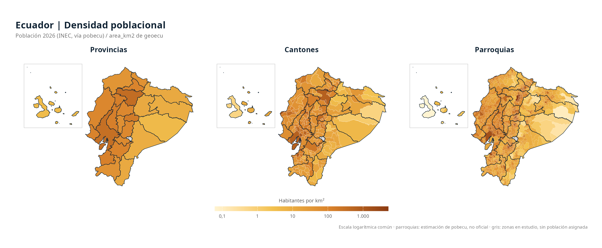

Official boundaries of Ecuador’s provinces, cantons and parishes as sf objects.
Español · English


About the language. This is a translation of the Spanish README. The package is aimed at users in Ecuador and Latin America: function names, arguments, column names, messages, the reference documentation and the vignettes are in Spanish. See the glossary below.
geoecu gives one-line access to the boundaries of Ecuador’s provinces, cantons and parishes, identified by the codes of the national Political-Administrative Division (DPA, División Político-Administrativa), ready to be mapped and joined with health, epidemiological surveillance or any other data. The layers come from the open data of the Territorial Organization of the State published by CONALI (National Committee of Internal Boundaries, Ministry of Government).
Note: geoecu is an independent package developed in a personal capacity. It is not an official product of any institution, including CONALI or the Ministry of Government.
Installation
Run this in the R or RStudio console. The plotting packages are optional for reading layers but needed to reproduce the figures on this page.
Development version (GitHub):
install.packages("remotes")
remotes::install_github("f-slg/geoecu")On first use, the geometries are downloaded from the data release, verified and cached for future sessions.
Ubuntu / Debian: sf system requirements
geoecu depends on sf. To avoid compiling geospatial libraries on Ubuntu, install the binary from the shell before installing the R package:
If you build sf from source, the system dependencies include libgdal-dev, libgeos-dev, libproj-dev, libudunits2-dev and libssl-dev.
First map
library(geoecu)
library(ggplot2)
provincias <- read_provincias()
ggplot(provincias) +
geom_sf(fill = "#DCEAF2", color = "#0F2233", linewidth = 0.25) +
labs(title = "Provinces of Ecuador") +
theme_void()Features
- Up-to-date data: 24 provinces, 223 cantons and 1,048 parishes according to the Territorial Organization of the State of 17 July 2026 (including the new canton of Borbón and the parish of Miss Ecuador).
- The three levels nest exactly: each canton is the union of its parishes and each province the union of its cantons, with no gaps or overlaps.
- Two resolutions:
"baja"(low, 3 MB, for maps, bulletins and Shiny dashboards) and"alta"(high, 39 MB, for spatial analysis). - Filters by name or code, ignoring accents and case, with suggestions when a name does not exist or is ambiguous.
- Joins your tables by DPA code even when the codes come from Excel without leading zeros.
- National maps with Galápagos relocated next to the mainland.
- Converts codes from earlier DPA versions (urban parishes, the former Eloy Alfaro canton) with
actualizar_codigo(). - One-time download, verified and cached; works offline afterwards.
📖 Documentation (Spanish): User guide · Full gallery · Data source · Functions
Queries and joining your own data
Read by province, canton and type
library(geoecu)
read_cantones(provincia = "Loja")
read_parroquias(canton = "Puyango", tipo = "rural")
read_parroquias(provincia = "Loja", resolucion = "alta")
# Projected CRS for spatial analysis in Loja
read_cantones(provincia = "Loja", crs = 32717)Each layer is an sf object with DPA codes and the area area_km2:
| Layer | Main columns |
|---|---|
read_provincias() |
dpa_provin, provincia, tipo, area_km2
|
read_cantones() |
dpa_canton, canton, dpa_provin, provincia, area_km2
|
read_parroquias() |
dpa_parroq, parroquia, tipo, dpa_canton, canton, area_km2
|
area_km2 is the area in km², computed on the WGS84 ellipsoid from the high-resolution layer. Use it rather than sf::st_area() on the WGS84 layer, which works on a sphere and gives areas 0.45% larger.
Join a table by DPA code
This example uses made-up demonstration data. Replace datos_demo with your own table before interpreting any result.
library(geoecu)
library(ggplot2)
# Made-up data, only to test the join (NOT real cases)
datos_demo <- data.frame(
cod_canton = c("1101", "1102", "1110"),
eventos_demo = c(12, 4, 7)
)
mapa_demo <- geoecu_unir(
datos_demo, codigo = "cod_canton", nivel = "canton",
provincia = "Loja"
)
ggplot(mapa_demo) +
geom_sf(aes(fill = eventos_demo), color = "white", linewidth = 0.2) +
scale_fill_gradient(low = "#DCEAF2", high = "#12618A",
na.value = "grey90", name = "Example") +
labs(title = "DPA join demo: Loja",
subtitle = "Made-up data; not observed events") +
theme_void()Cantons without data get NA. Before making epidemiological maps, aggregate events to the same territorial level and check the code matching.
If your table has columns named like those of the layer (for example tipo, canton or provincia), since version 0.4.2 they are kept with the suffix _datos, with a warning. In version 0.4.1 and earlier those columns were dropped silently: if you use one of them, rename them before joining.
DPA catalogue, search and cleaning
head(dpa)
buscar_dpa("arenal")
buscar_dpa("puyango", nivel = "canton")
formatear_codigo(c(701, 1101), "canton")
normalizar_nombre("Cañar ")formatear_codigo() restores leading zeros and returns NA, with a warning, when a value cannot be a code of the given level (for example "01" as a canton).
Codes from earlier versions
Since version 0.4.0, urban parishes are part of their cantonal seat (cabecera cantonal). To update codes from earlier versions and review the equivalences:
actualizar_codigo(c("010101", "080253"))
subset(dpa_equivalencias, cambio == "código distinto")actualizar_codigo() warns when an earlier parish was split among several current ones, and when it keeps a current code whose territory changed substantially (for example 170250, Cayambe, from which Juan Montalvo was separated). After converting, aggregate your data by the new code.
Offline use
# Where the downloaded layers are stored
geoecu_cache_dir()
geoecu_datos_disponibles()
# If you have your own GeoPackages, point to an existing folder:
# geoecu_usar_carpeta("~/datos/geoecu")Each file is checked against a checksum when it is downloaded and the first time it is used in a session: an incomplete file is downloaded again. geoecu_limpiar_cache() deletes the downloaded layers.
Map gallery
All figures are built from the CONALI open data shipped with geoecu; the last one adds INEC population figures through the sister package pobecu. The fully reproducible R code for each figure (labels in Spanish) is in the Spanish README and the web gallery.
| Level | Main function | Coverage |
|---|---|---|
| Provinces | read_provincias() |
24 provinces + 1 area under study |
| Cantons | read_cantones() |
223 cantons + 2 areas under study |
| Parishes | read_parroquias() |
1,048 parishes + 3 areas under study |
“Areas under study” (zonas en estudio) are territories whose jurisdiction has not yet been settled.
6. Population density by province, canton and parish
Combines area_km2 from geoecu with the 2026 INEC population from pobecu to obtain inhabitants per km² on a common log scale. Population uses the 2022 Census units, so units created afterwards are added to the unit they split from. Parish figures are pobecu estimates, not official.

Note:
reubicar_galapagos()changes coordinates only for inset maps. For spatial measurements use the original, unrelocated layers.
Glossary
| Spanish | English |
|---|---|
provincia, canton, parroquia
|
province, canton (municipality), parish |
cabecera cantonal / parroquia rural
|
cantonal seat (urban) / rural parish |
read_provincias(), read_cantones(), read_parroquias()
|
read the layer for each level |
geoecu_unir() |
join your table to a layer by DPA code |
buscar_dpa() |
search the DPA catalogue by name |
formatear_codigo() |
pad codes with leading zeros |
normalizar_nombre() |
normalise names (accents, case, spaces) |
actualizar_codigo() |
convert codes from earlier DPA versions |
reubicar_galapagos(), marco_galapagos()
|
relocate Galápagos / draw its inset frame |
geoecu_cache_dir(), geoecu_limpiar_cache()
|
cache location / clear the cache |
geoecu_usar_carpeta() |
use a local folder of GeoPackages |
resolucion = "baja" / "alta" |
low / high resolution |
Data
| Source | Territorial Organization of the State, National Committee of Internal Boundaries (CONALI), Ministry of Government of Ecuador. Version of 17 July 2026. Open data, CC BY licence. |
| Processing | Cantons and provinces built by dissolving parishes by DPA code; one polygon without a code (“ISLA”) is excluded; topological simplification with mapshaper (10 m high, 250 m low); reprojected to WGS84. Scripts in data-raw/. |
| Coverage | 24 provinces, 223 cantons and 1,048 parishes (223 cantonal seats and 825 rural), plus 3 areas under study. |
| CRS | WGS84 (EPSG:4326) by default. |
Citation
If you use geoecu in a report, dashboard, thesis or paper, please cite it. The DOI always resolves to the current CRAN version; state the version you used (packageVersion("geoecu")).
Salas Guerrero, R. F. (2026). geoecu: Maps of the Provinces, Cantons and Parishes of Ecuador (Mapas de Provincias, Cantones y Parroquias del Ecuador). R package version 0.4.1. https://doi.org/10.32614/CRAN.package.geoecu
BibTeX:
@Manual{geoecu,
title = {geoecu: Maps of the Provinces, Cantons and Parishes of Ecuador
(Mapas de Provincias, Cantones y Parroquias del Ecuador)},
author = {Ronald Fabricio {Salas Guerrero}},
year = {2026},
note = {R package version 0.4.1},
doi = {10.32614/CRAN.package.geoecu},
url = {https://CRAN.R-project.org/package=geoecu},
}From R, citation("geoecu") returns the same reference, and on GitHub the Cite this repository button offers it in APA and BibTeX.
When using the data, please also cite the source, as CONALI requests:
Comité Nacional de Límites Internos (CONALI), Ministerio de Gobierno del
Ecuador. Límites territoriales de la Organización Territorial del Estado
interparroquiales, aprobados por el Directorio del CONALI en sesión ordinaria
del 24 de marzo de 2022, 17 de enero de 2023 y 13 de marzo de 2026. Datos
abiertos, licencia CC BY.Contributing
Questions go to Discussions, bugs and proposals to issues (English or Spanish are both welcome). See the contributing guide and the code of conduct.
License
Code: MIT. Data: CONALI, CC BY; see inst/COPYRIGHTS.